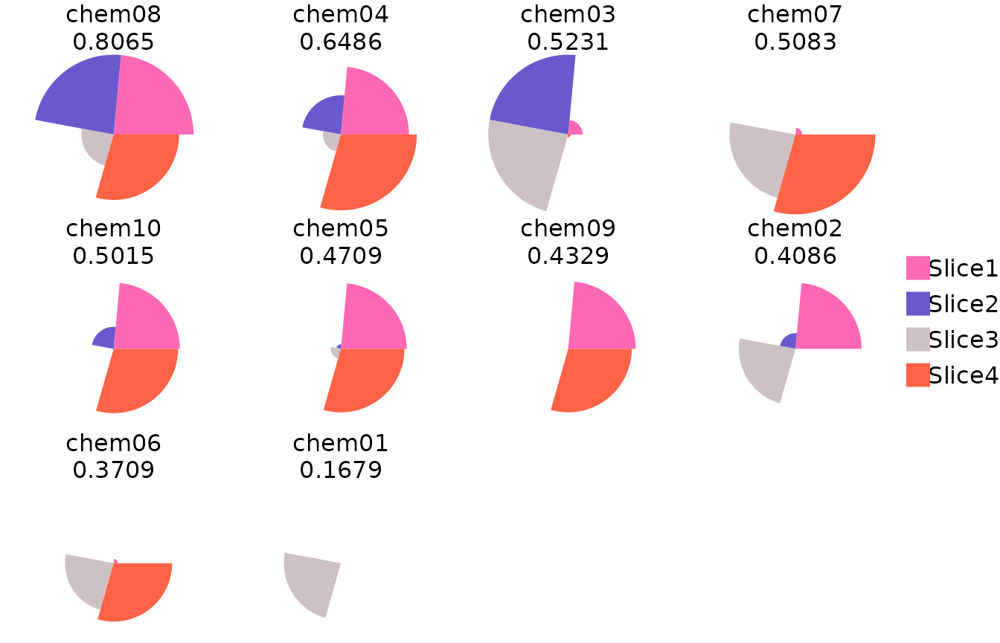
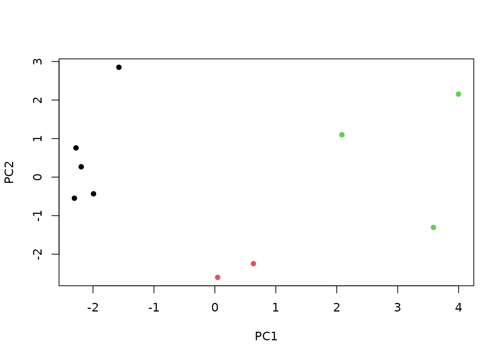

This vignette will show how to load a data file that was saved using the ToxPi Java GUI, which can be downloaded from here. The ToxPi Java GUI will save data files using file format “C” described in the ToxPi User Manual. This vignette will use the “format_C.csv” file to demonstrate how to import GUI data.
library(toxpiR)
## Create a tempfile and download 'format_C.csv'
fmtc <- tempfile()
ghuc <- "https://raw.githubusercontent.com"
fmtcUrl <- file.path(ghuc, "ToxPi", "ToxPi-example-files", "main", "format_C.csv")
download.file(url = fmtcUrl, destfile = fmtc, quiet = TRUE)The “format_C.csv” model specification reuses metrics across different slices. In general, we do not recommend duplicating inputs across slices, so the user gets a warning when creating a model with duplicate inputs.
## Import file into R
gui <- txpImportGui(fmtc)
#> Warning in method(object): The following 'input' columns are duplicated in the model:
#> metric3, metric2, metric3, metric1, metric2The resulting list object contains: $model,
a TxpModel object with the model specifications;
$input, a data.frame containing the data for
calculating ToxPi scores; and $fills, an array of slice
colors for plotting.
gui$model
#> TxpModel with 4 slices.
#> txpSlices(4): Slice1 Slice2 Slice3 Slice4
#> txpWeights(4): 4 4 4 5
#> txpTransFuncs(4): NULL NULL NULL NULL
gui$input
#> Row Source CASRN Name metric1 metric2 metric3 metric4
#> 1 1 source01 11-111-1111 chem01 25 91 NA NA
#> 2 2 source02 22-222-2222 chem02 NA 46 51 48
#> 3 3 source03 33-333-3333 chem03 44 NA 9 34
#> 4 4 source04 44-444-4444 chem04 26 64 27 9
#> 5 5 source05 55-555-5555 chem05 33 36 69 88
#> 6 6 source06 66-666-6666 chem06 94 46 NA 54
#> 7 7 source07 77-777-7777 chem07 37 31 NA 7
#> 8 8 source08 88-888-8888 chem08 58 29 9 46
#> 9 9 source09 99-999-9999 chem09 95 24 78 46
#> 10 10 source10 11-222-3333 chem10 68 54 43 25
gui$fills
#> [1] "#FF69B4" "#6959CD" "#CDC1C5" "#FF6347"We calculate ToxPi scores using the txpCalculateScores
function, which takes a model and input data.frame. Note
that by default the ToxPi GUI does not accept negative values. However,
the package keeps them by default. To replicate the GUI functionailty,
we set negative.value.handling = "missing".
## Calculate ToxPi scores
res <- txpCalculateScores(model = gui$model, input = gui$input, id.var = "Name",negative.value.handling = "missing")
## Overall ToxPi scores
txpScores(res)
#> 1 2 3 4 5 6 7 8
#> 0.1679363 0.4085540 0.5230658 0.6485548 0.4709411 0.3709372 0.5082931 0.8065481
#> 9 10
#> 0.4328831 0.5015004
## Slice scores
txpSliceScores(res, adjusted = FALSE)
#> Slice1 Slice2 Slice3 Slice4
#> 1 0.00000000 0.00000000 0.71372906 0.000000000
#> 2 0.82792881 0.19675216 0.70869704 0.002381066
#> 3 0.18129307 1.00000000 1.00000000 0.033389421
#> 4 0.85188671 0.49126173 0.22527793 0.950345105
#> 5 0.82344996 0.05677389 0.12681807 0.795566352
#> 6 0.05345762 0.00000000 0.60857479 0.731560510
#> 7 0.08438215 0.00000000 0.82586349 1.000000000
#> 8 1.00000000 1.00000000 0.40340351 0.819540604
#> 9 0.84561468 0.00000000 0.00000000 0.795310761
#> 10 0.82873456 0.27576432 0.01947655 0.805920923A results output similar to that given by the Java GUI can be obtained by combining score components.
out <- as.data.frame(res, adjusted = FALSE)
out <- out[order(out$score, decreasing = TRUE), ]
out
#> id score rank Slice1 Slice2 Slice3 Slice4
#> 8 chem08 0.8065481 1 1.00000000 1.00000000 0.40340351 0.819540604
#> 4 chem04 0.6485548 2 0.85188671 0.49126173 0.22527793 0.950345105
#> 3 chem03 0.5230658 3 0.18129307 1.00000000 1.00000000 0.033389421
#> 7 chem07 0.5082931 4 0.08438215 0.00000000 0.82586349 1.000000000
#> 10 chem10 0.5015004 5 0.82873456 0.27576432 0.01947655 0.805920923
#> 5 chem05 0.4709411 6 0.82344996 0.05677389 0.12681807 0.795566352
#> 9 chem09 0.4328831 7 0.84561468 0.00000000 0.00000000 0.795310761
#> 2 chem02 0.4085540 8 0.82792881 0.19675216 0.70869704 0.002381066
#> 6 chem06 0.3709372 9 0.05345762 0.00000000 0.60857479 0.731560510
#> 1 chem01 0.1679363 10 0.00000000 0.00000000 0.71372906 0.000000000ToxPi images and overall score rank plot can also be produced.

The basic clustering methods offered in the Java GUI can also be recreated.
## Hierarchical Clustering
hc <- hclust(dist(txpSliceScores(res)), method = 'complete')
plot(hc, hang = -1, labels = txpIDs(res), xlab = 'Name', sub = '')
## K-Means Clustering, plotted using principal components
nClusters <- 3
km <- kmeans(txpSliceScores(res), nClusters)
pc <- prcomp(txpSliceScores(res))
coord <- predict(pc) * -sum(txpWeights(res))
plot(coord[,1], coord[,2], col = km$cluster,
xlab = 'PC1', ylab = 'PC2', pch = 16)